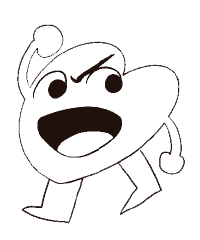
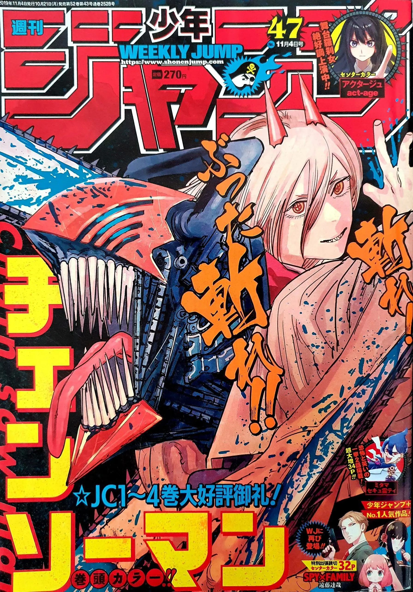

L'auteur

Logo de Fujimoto
Tatsuki Fujimoto est né dans la préfecture d’Akita. Dès le collège, il s’invente un magazine de prépublication de manga, qu’il gère intégralement de manière fictive
: il a absolument tout en tête et mène jusqu’à sept récits en parallèle. L’un d’entre eux, à la trame très dure, lui servira de base pour Fire Punch. En 2014, il fait ses
débuts en tant que mangaka avec le titre Koi no Mômoku (“L’Amour rend aveugle”) publié dans Jump SQ.
Une des influences de Fire Punch est Anpanman, un classique du manga au Japon destiné aux enfants. La tête du héros est un pain fourré de haricots rouges dont il se sert afin de nourrir les gens affamés.
C’est de cette caractéristique qu’est venu à Tatsuki Fujimoto l’idée d’un personnage offrant des parties de son corps aux hommes pour combattre la famine. Souhaitant développer la thématique du feu
dans une histoire depuis plusieurs années, Tatsuki Fujimoto a choisi de situer l’action dans un univers paradoxalement touché par un froid extrême afin de créer un impact scénaristique important.
Du 3 décembre 2018 au 14 décembre 2020, Fujimoto publie la première partie de Chainsaw Man dans le Weekly Shōnen Jump. En septembre 2021, la série compte onze volumes reliés au Japon et onze volumes en France. La deuxième partie est publiée à partir du 13 juillet 2022 dans le Shōnen Jump+. En 2021, Chainsaw Man remporte la 66e édition du Prix Shōgakukan. Une adaptation de la série en animé a également été faite en 2022 par le studio d'animation MAPPA.

Production
Malgré la violence et l'humour noir de la série, Tatsuki Fujimoto a toujours voulu sérialiser le manga dans le magazine Weekly Shōnen Jump. Fujimoto a également déclaré que,
malgré son succès dans le magazine, il souhaitait écrire la deuxième partie de la série sur Shōnen Jump+, car il souhaitait faire une série complètement différente de la première partie
8. L'auteur déclare s'être inspiré d'Eric Cartman, personnage de South Park, pour le comportement de Power et des tenues du film Reservoir Dogs de Quentin Tarantino pour celles des Devil
Hunters9. Sur Twitter, il a déclaré qu'il est un fan de la trilogie de films Kizumonogatari de 2016, et que la bataille finale de la trilogie, montrée dans la partie 3 : Reiketsu, a inspiré
la bataille finale de la première partie de Chainsaw Man. Il a également décrit la série comme un "méchant FLCL"10,11.
En ce qui concerne l'adaptation animée de la série, lorsque la série animée a été officiellement annoncée, Fujimoto a commenté: « Chainsaw Man est comme un imitateur de Dorohedoro
et Jujutsu Kaisen, et le studio de Dorohedoro et Jujutsu Kaisen produira son anime, Je n'ai rien à dire. S'il vous plaît, faites-le ! »12. Selon l'éditeur du manga, Shihei Lin, Fujimoto
est fortement impliqué dans la production de la série animée, déclarant : « Fujimoto a vu tous les documents de pitch de Chainsaw Man, la structure de l'histoire, les scripts et même les
storyboards. Il a continué à être en contact étroit avec le staff de l'anime. » Le producteur de MAPPA, Makoto Kimura, a également commenté que l'implication de Fujimoto s'étendait au casting,
à la planification et à la musique, car le staff voulait que l'anime capture autant que possible la vision originale du manga, y compris la violence et le gore